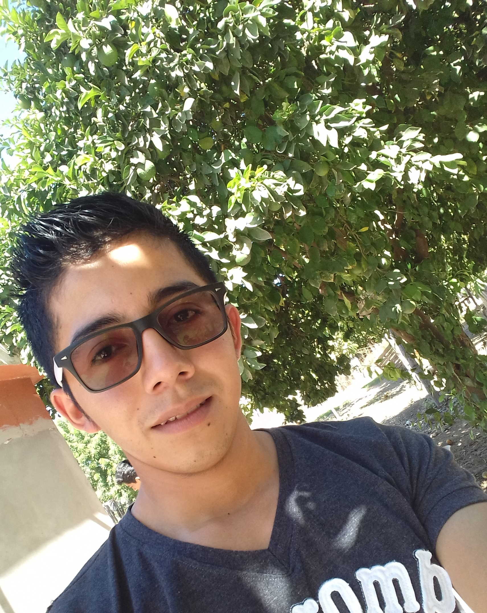

Educación
- Telesecundaria 639
SorJuana Ines De la Cruz
- Generación 2009-2011.
- Union Buena Vista, Chicomuselo, Chiapas.
- Telebachillerato 98
Adolfo Ruiz Cortines
- Generación 2012-2015 Economicos Administrativos.
- Union Buena Vista, Chicomuselo, Chiapas.
- Universidad Autónoma Intercultural de México
- 2015-2019 Ingenieria en Sistemas Computacionales.
- Mochicahui, El Fuerte, Sinaloa.

Formación Complementaria
6to. Simposio ISC, "
Integrando conocimientos tecnólogicos para la transf-
ormación de sociedades"
Mochicahui, El Fuerte, Sinaloa. Octubre del 2015.
7mo. Simposio ISC,
"la tecnología como parte de nuestra cultura"
Mochicahui, El Fuerte, Sinaloa. Octubre del 2016.
XV Congreso Internacional de Sistemas,
Tecnologias de la Indofrmación e Informática.
Grupo LOC, Pto. Vallarta, Jalisco. Mayo del 2018.
8vo. Simposio ISC,
"la tecnologia Informática: la era del Millennium digital"
Mochicahui, El Fuerte, Sinaloa. febrero del 2019.
INFORO “A mis 18, Mi legado” ITESUS Mazatlán
Mazatlán Sinaloa. Marzo del 2019.
códigofacilito, "Curso de introducción a la programación"
Abril del 2020.
Experiencia Profesional
TVP Televisora del Yaqui, S.A de C.V
Marzo 2019 - Julio 2019.
COMPUMAX | Computación al Maximo
Febrero de 2020 – Abril de 2020.
Areas de Experiencia
- Mantenimiento preventivo y correctivo de equipos de cómputo.
- Conferencias de Informática introductoria para alumnos de educación profesional.
- Instalación de antenas y enlaces PTP.
- Instalación de cámaras de video vigilancia.